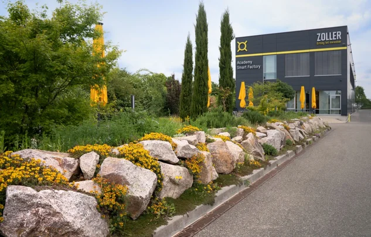
헬레네 졸러 정원
500㎡ 규모의 옛 주차장을 정원으로 바꾸었습니다. 이곳은 직원들은 물론 벌, 나비, 곤충들이 즐겨 찾는 만남의 장소입니다.
자세히 알아보기 자세히 보기
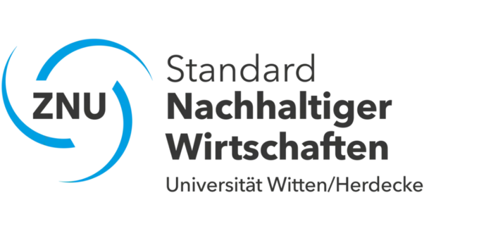
지속 가능성은 ZOLLER의 기업 철학에서 핵심적인 역할을 합니다. 우리는 경제적 성공뿐만 아니라 환경과 사회에 대한 책임도 다하고 있습니다. 절삭 공구의 설정, 측정 및 검사를 위한 정밀 측정 기기, 소프트웨어, 인터페이스, 클라우드 서비스, 그리고 공구 공정 자동화 솔루션을 아우르는 당사의 전체 포트폴리오는 자원 보호에 기여합니다. 당사는 사회적 책임을 다하며, 회사 내에서 공정한 근무 환경을 제공합니다.
지속 가능한 관행을 비즈니스 프로세스에 통합하는 것은 ZOLLER에게 매우 중요합니다. 저희는 당사의 활동이 환경에 미치는 영향을 잘 인지하고 있으며, 이에 따라 자원을 절약하는 기술과 에너지 효율적인 생산 방식을 채택하고 있습니다. 친환경 소재를 사용하고 물류 프로세스를 최적화함으로써, 저희는 탄소 발자국 감축에 적극적으로 기여하고 있습니다. 또한, 지속 가능성을 핵심 가치로 삼는 기업 문화를 조성하고 있습니다. 직원들은 지속 가능한 결정을 내리고 환경 성과를 개선하기 위한 혁신적인 아이디어를 제안할 수 있도록 교육받고 동기를 부여받습니다. 우리는 모든 구성원이 우리 기업의 미래를 준비하는 데 기여할 수 있다고 믿습니다. 유엔의 '2030 지속 가능한 발전 의제'에 명시된 17가지 지속 가능한 발전 목표를 우리 자신의 지속 가능한 행동을 위한 지침으로 삼고 있습니다.
ZOLLER는 사회적 책임도 다하고 있습니다. 우리는 지역 사회를 지원하고 공정한 근로 조건을 위해 노력합니다. 공급망 내에서 윤리적 기준을 준수함으로써, 파트너 기업들도 지속 가능한 경영을 실천하도록 보장합니다. 종합적으로 볼 때, ZOLLER에게 지속 가능성은 단순한 유행이 아니라 장기적인 목표입니다. 우리는 책임감 있는 행동이 환경 보호에 기여할 뿐만 아니라 고객의 신뢰를 강화하고 경쟁력을 높여준다고 확신합니다. 파트너 및 고객과 함께, 우리 기업과 미래 세대를 위한 지속 가능한 미래를 만들어 나가기 위해 노력하고 있습니다.

500㎡ 규모의 옛 주차장을 정원으로 바꾸었습니다. 이곳은 직원들은 물론 벌, 나비, 곤충들이 즐겨 찾는 만남의 장소입니다.
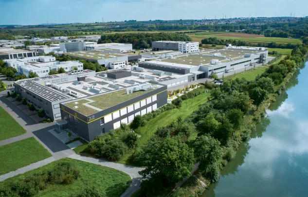
ZOLLER는 전기를 전량 재생 에너지에서 얻으며, 일부는 자체 태양광 설비로 생산합니다.
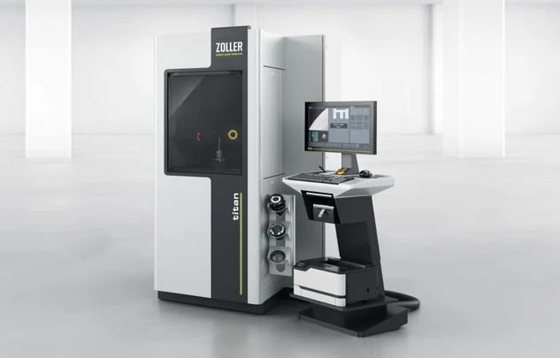
ZOLLER의 기술은 생산 시설이 자재, 기계, 공구를 최적으로 활용하도록 돕습니다. 이를 통해 불량 부품 생산을 줄이고 공정 효율을 높입니다.
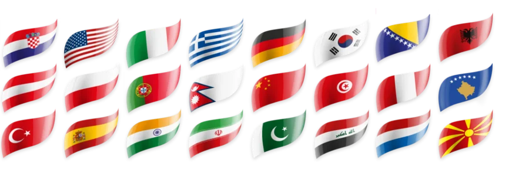
졸러(ZOLLER)는 기술적 우수성뿐만 아니라 지속가능성과 다양성에 대한 강한 헌신을 바탕으로 하는 혁신적인 기업입니다. 우리는 다양성을 강점으로 여기는 근무 환경을 조성하는 것을 매우 중요하게 생각합니다.
24개 국적의 직원들이 함께 일하는 ZOLLER 본사(플라이델스하임)는 상호 존중과 문화 간 교류의 문화를 장려합니다. 이러한 다양성은 서로 다른 관점이 어우러짐으로써 창의성, 혁신 및 문제 해결 능력에 크게 기여합니다. ZOLLER는 구체적인 이니셔티브와 개방적인 기업 문화를 통해 환경적, 사회적 측면 모두에서 사회적 책임과 지속 가능한 성장을 선도하고 있습니다. 이를 통해 회사는 지속 가능한 발전이 다양한 인력과 조화를 이루어 함께 미래 지향적인 솔루션을 창출할 수 있음을 보여주고 있습니다.
저희의 국제적인 인력은 ZOLLER 플라이델스하임에서 다양성이 단순한 목표가 아니라 실제로 실천되고 있는 현실이며, 매일 저희를 앞으로 나아가게 하는 원동력임을 증명합니다.
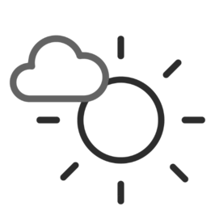
2030년까지 CO2e
배출량 감축
2025년 기준: 6695,74 t CO2e
(2024초기값: 8804,24 t CO2e)
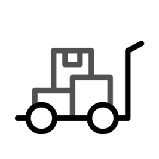
2030년까지 A급 공급업체의
대부분은 해당 지역에서 선정될 예정이다
2025년 기준: A급 공급업체의 82%가 해당 지역 출신이다
(2024초기값: 70 %)
2030년까지 당사의
포장재는 재활용 가능해야 합니다
2025년 말 기준: 재활용 가능 포장재 52%
(2024초기값: 40 %)
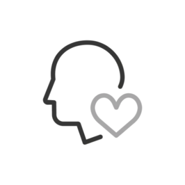
2030년까지
사회 공헌 프로젝트 지원
06/2026년 기준: 1개 프로젝트
(2024초기값: 0개 프로젝트)
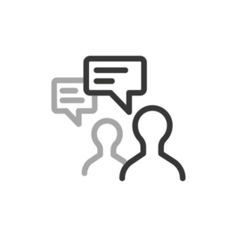
2028년까지의
고객 만족도
2025년 1.29점 (약 1,000명 대상 설문조사 기준)
(2024초기값: 1.33)
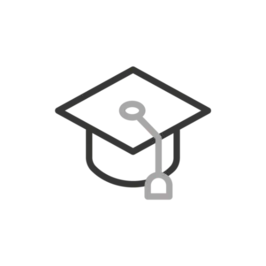
2030년까지
매년 수습생/시간
2025년 기준: 전체 직원 수 대비 6%의 수습사원/시간
(2024초기값: 5 %)
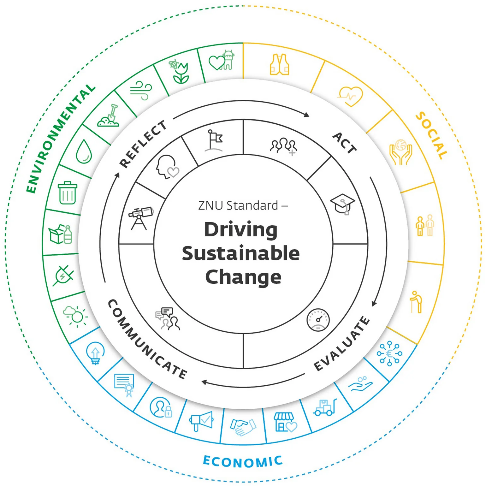
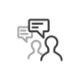 | 조기 파악: 우리 기업에 어떤 주제가 중요한가? |
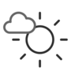 | 철학 우리 회사의 핵심 가치는 무엇인가요? |
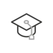 | 목표 언제까지 무엇을 달성하고자 하는가? |
| 통합: 기업 프로세스에 지속가능성을 어떻게 통합할 수 있을까요? | |
| 교육: 직원들에게 지속가능성에 대해 어떻게 교육할 수 있을까요? |
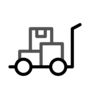 | 대화 문화: 지속 가능성에 대해 내부 및 대외적으로 어떤 메시지를 전달하고 있는가? |
| 진단: 내 지속가능성 경영은 얼마나 효과적인가? |
| 조기 파악: 우리 기업에 어떤 주제가 중요한가? | |
| 철학 우리 회사의 핵심 가치는 무엇인가요? | |
| 목표 언제까지 무엇을 달성하고자 하는가? |
| 통합: 기업 프로세스에 지속가능성을 어떻게 통합할 수 있을까요? | |
| 교육: 직원들에게 지속가능성에 대해 어떻게 교육할 수 있을까요? |
| 대화 문화: 지속 가능성에 대해 내부 및 대외적으로 어떤 메시지를 전달하고 있는가? |
| 진단: 내 지속가능성 경영은 얼마나 효과적인가? |
저희의 활동은 측정 가능하고 검증 가능하며 지속적으로 이루어집니다.
저희는 지속 가능성을 매일 실천해야 할 과제로 여깁니다.
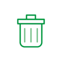
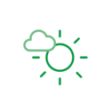
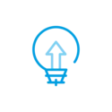
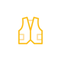
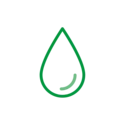
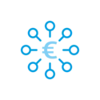
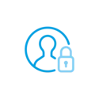
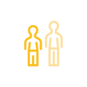